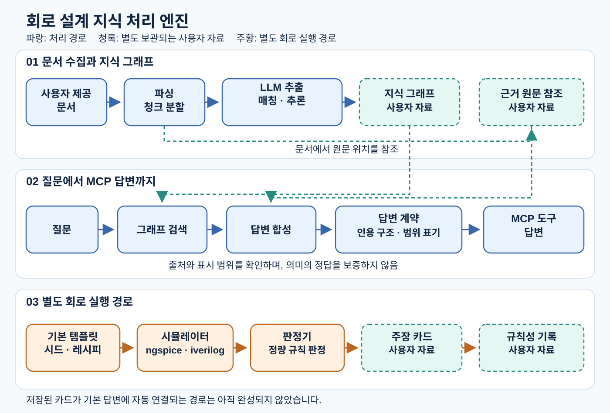

openclaw-brain — 회로 설계 지식 처리 엔진
사용자가 제공한 문헌을 근거가 연결된 지식 그래프로 만들고, 질문의 근거와 적용 범위를 드러내며, 별도의 회로 시뮬레이션으로 주장을 시험하는 엔진입니다.

엔진과 사용자 자료
| 엔진 소스에 포함하는 것 | 별도로 제공·보관하는 사용자 자료 |
|---|---|
| 문서 파싱·청크 분할, LLM 추출·매칭·추론, 그래프 검색·저장 코드 | 문헌 원문과 추출문, 축적된 지식 그래프 |
| 답변 합성·답변 계약·MCP 도구 | 실제 질문·답변과 사용자별 평가 자료 |
| 직접 작성한 기본 템플릿·시드·레시피, 공개 PDK 연결 및 시뮬레이션·판정 코드 | 실행 후 생성된 netlist·로그·측정 결과, 주장 카드·규칙성 기록과 corpus |
작동 흐름
문서를 파싱하고 분할한 뒤 LLM 추출, 원문 근거 대조, 매칭과 추론을 거쳐 그래프에 기록합니다. 질문은 그래프 검색과 답변 합성을 거치며, 답변 계약은 인용 구조와 적용 범위 표시를 점검합니다. 인용이 있다는 사실만으로 문장의 의미가 옳다고 보증하지는 않습니다.
별도 회로 경로에서는 템플릿과 레시피로 만든 실험을 ngspice 또는 iverilog에서 실행하고 시험 조건과 판정 결과를 카드로 기록합니다. 일부 교차 PDK 결과는 규칙성으로 묶습니다. 저장된 카드의 판정 결과가 기본 답변에 자동 반영되는 기능은 아직 완성되지 않았습니다.
현재 범위
엔진 소스와 합성 입력 시험을 제공합니다. 문헌 원문·축적된 지식 데이터·개발 저장소의 과거 이력은 포함하지 않습니다. PyMuPDF import를 차단한 단위시험 1,700개 통과·143개 건너뜀을 확인했습니다. 실제 서버·모델·PDK 환경의 배포 검증은 별도입니다. 소스 열람·심사는 허용하며, 실행·수정·재배포에는 별도 허락이 필요합니다.